Yoga Poses
100 poses. Yoga poses (asanas) with clear instructions, benefits and how long to hold each one.
Standing
 Mountain PoseTadasana
Mountain PoseTadasana Warrior IIVirabhadrasana II
Warrior IIVirabhadrasana II Warrior IVirabhadrasana I
Warrior IVirabhadrasana I Triangle PoseTrikonasana
Triangle PoseTrikonasana Extended Side Angle PoseUtthita Parsvakonasana
Extended Side Angle PoseUtthita Parsvakonasana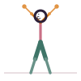
Chair PoseUtkatasana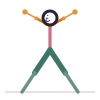
Goddess PoseUtkata Konasana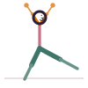
Crescent LungeAnjaneyasana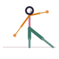
Gate PoseParighasana Reverse WarriorViparita Virabhadrasana
Reverse WarriorViparita Virabhadrasana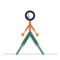
Garland PoseMalasana Standing SplitUrdhva Prasarita Eka Padasana
Standing SplitUrdhva Prasarita Eka Padasana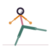
Skater PoseSkandasana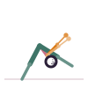
Humble WarriorBaddha Virabhadrasana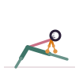
Lizard PoseUtthan Pristhasana
Seated
 Easy PoseSukhasana
Easy PoseSukhasana Bound Angle PoseBaddha Konasana
Bound Angle PoseBaddha Konasana Staff PoseDandasana
Staff PoseDandasana Hero PoseVirasana
Hero PoseVirasana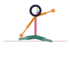
Cow Face PoseGomukhasana- Lotus PosePadmasana
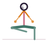
Fire Log PoseAgnistambhasana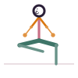
Half Lotus PoseArdha Padmasana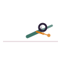
Boat PoseNavasana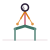
Thunderbolt PoseVajrasana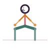
Lion PoseSimhasana Accomplished PoseSiddhasana
Accomplished PoseSiddhasana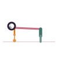
Cat-Cow PoseMarjaryasana-Bitilasana
Forward folds
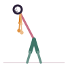
Standing Forward BendUttanasana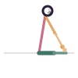
Seated Forward FoldPaschimottanasana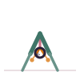
Wide-Legged Forward FoldPrasarita Padottanasana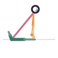
Head-to-Knee PoseJanu Sirsasana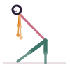
Pyramid PoseParsvottanasana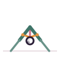
Seated Wide-Angle PoseUpavistha Konasana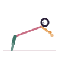
Puppy PoseUttana Shishosana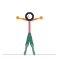
Half Standing Forward BendArdha Uttanasana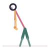
Big Toe PosePadangusthasana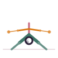
Tortoise PoseKurmasana
Backbends
 Cobra PoseBhujangasana
Cobra PoseBhujangasana Bridge PoseSetu Bandhasana
Bridge PoseSetu Bandhasana Locust PoseSalabhasana
Locust PoseSalabhasana Upward-Facing DogUrdhva Mukha Svanasana
Upward-Facing DogUrdhva Mukha Svanasana Camel PoseUstrasana
Camel PoseUstrasana Fish PoseMatsyasana
Fish PoseMatsyasana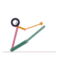
Bow PoseDhanurasana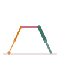
Wheel PoseUrdhva Dhanurasana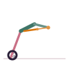
Frog PoseBhekasana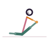
King Pigeon PoseRajakapotasana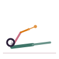
Superman PoseVimanasana Sphinx PoseSalamba Bhujangasana
Sphinx PoseSalamba Bhujangasana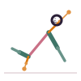
Wild ThingCamatkarasana
Twists
 Half Lord of the Fishes PoseArdha Matsyendrasana
Half Lord of the Fishes PoseArdha Matsyendrasana Supine TwistSupta Matsyendrasana
Supine TwistSupta Matsyendrasana Revolved Triangle PoseParivrtta Trikonasana
Revolved Triangle PoseParivrtta Trikonasana Revolved Chair PoseParivrtta Utkatasana
Revolved Chair PoseParivrtta Utkatasana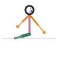
Bharadvaja's TwistBharadvajasana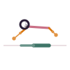
Thread the Needle PoseParsva Balasana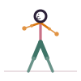
Noose PosePasasana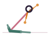
Revolved Head-to-Knee PoseParivrtta Janu Sirsasana- Marichi's PoseMarichyasana
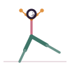
Revolved Crescent LungeParivrtta Anjaneyasana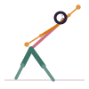
Revolved Side Angle PoseParivrtta Parsvakonasana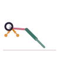
Revolved Abdomen PoseJathara Parivartanasana Twisted PoseVakrasana
Twisted PoseVakrasana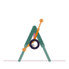
Revolved Wide-Legged Forward FoldParivrtta Prasarita Padottanasana
Balance
 Half Moon PoseArdha Chandrasana
Half Moon PoseArdha Chandrasana Warrior IIIVirabhadrasana III
Warrior IIIVirabhadrasana III Dancer's PoseNatarajasana
Dancer's PoseNatarajasana Crow PoseBakasana
Crow PoseBakasana Standing Hand-to-Big-Toe PoseUtthita Hasta Padangusthasana
Standing Hand-to-Big-Toe PoseUtthita Hasta Padangusthasana Side Plank PoseVasisthasana
Side Plank PoseVasisthasana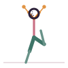
Tree PoseVrikshasana Eagle PoseGarudasana
Eagle PoseGarudasana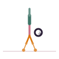
Crane PoseBakasana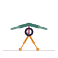
Firefly PoseTittibhasana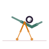
Eight-Angle PoseAstavakrasana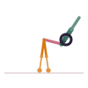
Peacock PoseMayurasana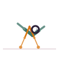
Flying Pigeon PoseEka Pada Galavasana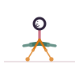
Scale PoseTulasana Side Crow PoseParsva Bakasana
Side Crow PoseParsva Bakasana
Inversions
 Legs-Up-the-WallViparita Karani
Legs-Up-the-WallViparita Karani Shoulder StandSarvangasana
Shoulder StandSarvangasana HeadstandSirsasana
HeadstandSirsasana Plow PoseHalasana
Plow PoseHalasana Downward-Facing DogAdho Mukha Svanasana
Downward-Facing DogAdho Mukha Svanasana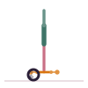
Forearm StandPincha Mayurasana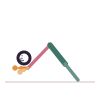
Dolphin PoseArdha Pincha Mayurasana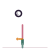
Rabbit PoseSasangasana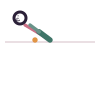
Ear Pressure PoseKarnapidasana- Scorpion PoseVrischikasana
- Inverted Staff PoseViparita Dandasana
Restorative


Nothing found. Try another word.